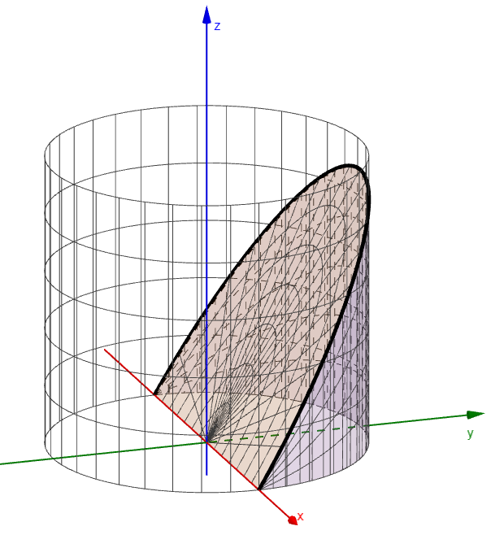

Integrals over Non-Rectangular Regions

Earlier, we used the limit of a Riemann sum to find the volume of a solid, and then found the same volume using a double integral and the Fundamental Theorem of Calculus. Both times, the solid was above or below a rectangular region in the \(xy\)-plane.
Now we begin integrating over non-rectangular regions, as illustrated in the figure. In this lesson we focus only on how the calculations are carried out. In the next few lessons, we will explore what they represent, and see how these calculations apply to geometry and the sciences, especially physics.
An Example
Evaluate the double integral below.
The inside limit depends on \(x\). Integrate with respect to \(y\) first.
An Example
Evaluate the double integral below, where \(R\) is the region in the first quadrant enclosed by \(y = 4x\) and \(y = x^3\).
First find where the curves meet: \(x^3 = 4x\) gives \(x = 0\) or \(x = 2\) in the first quadrant. Between these, the line \(y = 4x\) is above the curve \(y = x^3\). So \(x\) runs from \(0\) to \(2\), and \(y\) runs from \(x^3\) up to \(4x\).
An Example
Express the answer to the following in terms of \(t\).